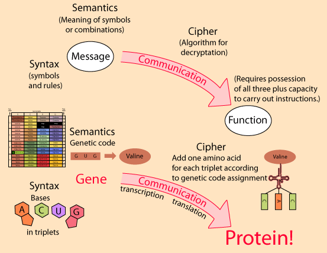

The Genetic Code in Operation for Protein Construction
The use of a formal code to accomplish a purpose requires the receiver of the code to understand the rules and the meaning of the symbols, and be able to use the information received to accomplish a task. In the language of information science, the code must have a syntax and semantics. For the communication of information, the receiver must be in possession of that syntax and semantics, and possibly also a cipher to be able to decode the information. The receiver must also be able to carry out the task communicated.

The cipher in this case involves the agency of another complex structure which fixes the amino acid valine to the transfer RNAs which have the anti-codon CAC, even though these bases do not have any chemical or physical reason to be associated with valine. They are "formally" matched to follow the genetic code. The building blocks for proteins are the 20 amino acids used in life, and each is attached to a specific transfer RNA molecule so that protein building materials are available in the intracellular medium. The pattern for the construction of a protein is copied to the messenger RNA by transcription in the cell nucleus. Then the translation into a chain of amino acids takes place in a ribosome of the cell. The tRNAs transfer the appropriate amino acids to build the protein according to the blueprint carried by the mRNA.
After this translation, further shaping of the protein takes place to fold and form it into its final functional configuration.
|
Index
Biochemical concepts
Chemistry concepts
Reference
Karp
Ch 11 |